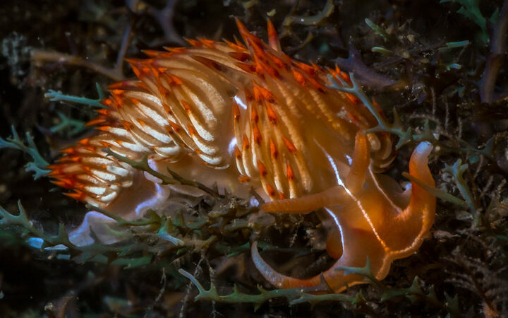

Fonction : Aventurier
Histoire
Aurelio Fiordaliso portait en lui un héritage ancien, dont les traces s’étaient estompées avec le temps. Issu d’une lignée de navigateurs et d’explorateurs indépendants, certains érudits avancent qu’il descendrait, de manière lointaine, d’Olfryn, fils de Meryl — une figure associée à la Maison Solitude, réputée pour sa maîtrise de la navigation.
Chez Aurelio, cet héritage semblait s’exprimer naturellement : il comprenait la mer comme d’autres comprennent un langage.
Très tôt, il développa une fascination pour les créatures marines. Là où d’autres voyaient des monstres, Aurelio voyait des comportements, des équilibres, des systèmes vivants. Il consacra sa vie à les observer, à les étudier, et à distinguer le danger réel de simples réactions naturelles face à la présence humaine.
Son corps, robuste et endurci, fut façonné par des années passées en mer et dans des environnements hostiles. Peu bavard, il préférait observer en silence. Mais derrière cette réserve se cachait un esprit profondément pacifique, cherchant à comprendre plutôt qu’à détruire.
C’est au cours d’une expédition menée par Edwardo Fortunamare, visant à retrouver une terre inconnue, qu’Aurelio fut confronté pour la première fois à une créature marine d’envergure. Contrairement aux récits catastrophiques vécus auparavant par Edwardo, cette rencontre fut différente.
Alors que l’équipage se préparait à un affrontement, Aurelio observa la créature. Sans donner d’ordres, il identifia une irrégularité dans ses mouvements, révélant un comportement défensif plutôt qu’agressif. Grâce à ses remarques précises, le groupe — comprenant notamment Alessio, Rodrigo et Alba Petra — parvint à éviter un conflit inutile.
Cet événement marqua un tournant. Là où Edwardo apportait l’audace, Aurelio apportait la compréhension. Là où d’autres auraient combattu, lui permit d’éviter une bataille.
Avec le temps, sa manière d’être s’imposa d’elle-même. Aurelio ne cherchait ni à diriger, ni à convaincre. Mais sur les ponts des navires comme lors des expéditions, il devint celui que l’on écoutait avant d’agir.
Lorsque la maisonnée di Valmosa fut fondée, aux côtés de Edwardo, Rodrigo, Alessio, Alba Petra et Odal l’Éternel, Aurelio choisit de s’y joindre sans chercher à en tirer autorité.
Au sein de la maisonnée, il devint une figure discrète mais essentielle. Consulté avant chaque expédition risquée, il apportait une lecture claire des situations complexes, permettant de transformer des affrontements potentiels en décisions maîtrisées.
Aurelio ne se considère pas comme un chasseur. Il distingue avec rigueur les créatures dangereuses de celles qui ne font que défendre leur territoire. Cette vision lui vaut un profond respect, car elle préserve un équilibre fragile entre l’homme et les profondeurs.
Sa réputation se construisit sans éclat, portée uniquement par la justesse de ses observations.
« Si Aurelio observe une bête, écoute-le avant de lever ton épée. »